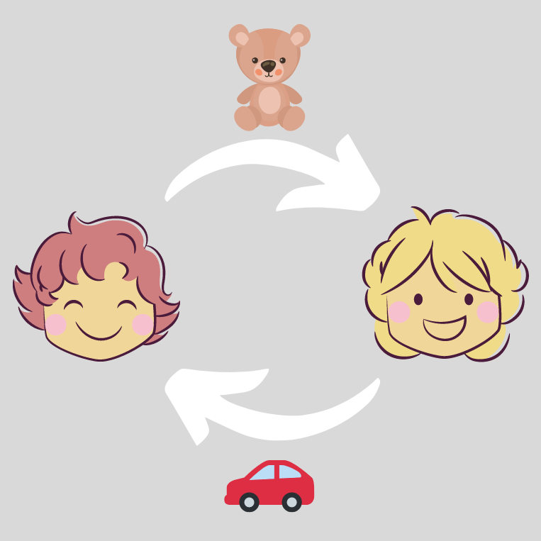

Circular Monday
Schütze unsere Umwelt

„Black Friday“ – kaufen, kaufen, kaufen
Am Freitag ist wieder Black Friday – also schwarzer Freitag. Der Black Friday kommt aus Amerika und findet seit einigen Jahren jedes Jahr Ende November statt. An diesem Tag geben viele Geschäfte – auch im Internet – einen großen Rabatt auf ihre Produkte. Das bedeutet, man muss für die Produkte viel weniger bezahlen muss als sonst. Mit dieser Aktion wollen uns die Geschäfte locken, ganz viele Dinge zu kaufen. Dadurch, dass an diesem Tag dann viel mehr gekauft wird als an anderen Tagen, verdienen die Geschäfte auch mehr Geld als an „normalen“ Tagen. Leider ist der Black Friday aber gar nicht gut für die Umwelt. Die Menschen kaufen an diesem Tag viel mehr als sonst, vielleicht sogar etwas, was sie gar nicht brauchen – nur weil es billiger ist.
Folge: zusätzliche Belastung der Umwelt
Die Folge ist, dass viele Produkte wieder weggeworfen werden und somit umsonst hergestellt wurden. Es wurden also ganz unnötig Ressourcen und Materialien verschwendet und die Umwelt unnötig belastet. Viel besser für die Umwelt ist es, nicht immer alles neu zu kaufen, sondern Dinge, wie Kleidung, Möbel oder Spielsachen, auch mal gebraucht zu kaufen oder mit Freunden zu tauschen.

Gegenbewegung „Circular Monday“
Deswegen wurde der kommende Montag, also der Montag vor dem Black Friday, zum Circular Monday ernannt. Das kann man in etwa mit Kreislaufmontag übersetzen. Diese Gegenbewegung zum Schwarzen Freitag ruft dazu auf, Dinge zu leihen, statt sie zu kaufen, kaputte Dinge zu reparieren statt sie wegzuschmeißen, und Dinge weiterzuverkaufen oder zu verschenken, die man nicht mehr braucht, statt sie zu entsorgen. Auf diese Weise bleiben die Dinge in einem Kreislauf und es müssen nicht so viele Dinge neu hergestellt werden. So schonen wir unsere Umwelt – sie wird weniger belastet und wir sorgen dafür, dass noch viele Menschen und Tiere nach uns so ein schönes Leben auf unserer Erde führen können wie wir.
Sei also schlau und mach nicht beim Schwarzen Freitag mit, sondern beim Kreislaufmontag.
Tausche vielleicht ein paar Spielsachen, mit denen du nicht mehr so gerne spielst, mit deinen Freunden statt dir neue zu kaufen. So gibst du nicht nur weniger Geld aus, sondern gleich gar keins.
